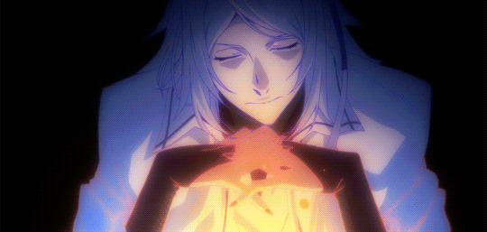

BUNGOU STRAY DOGS DEAD APPLE
Bungou Stray Dogs Dead Apple, nos cuenta como personas poseedoras de habilidades de todo el mundo han comenzado a suicidarse por razones desconocidas. Como pedido de Ango Sakaguchi, la Agencia De Detectives tendrá que investigar este suceso. Ahi es donde conocemos a principal sospechoso conocido como coleccionista.

Tatsuhiko Shibusawa, tambien conocido como el coleccionista es el principal antagonista de Dead Apple. Es conocido por estar detras del incidente de la cabeza de dragon. Incidente en el cual más de una organización comenzó a moverse para reclamar una gran cantidad de fortuna de un mafioso que habia muerto,el suceso hizo de Yakohama un campo de sangre por 88 dias.
Además de este incidente, se conoce que el fue un doctor que experimentó con el poder de Atsushi cuando este estaba en el orfanato, con el fin de encontrar la "ultima habilidad".

Volviendo a la actualidad, Tatsuhiko aun tiene el deseo de encontrar la habilidad definitiva y para esto decide formar un equipo junto a Fyodor Dostoyevski y Dazai Osamu. A pesar de todo Tatsuhiko se dará cuenta que el deseo que compartia con sus aliados era solo suyo, viendo así como todos se traicionaron entre sí para ver sus verdaderos deseos hechos realidad
PRODUCCION
Dirección: Takuya Igarashi
Dirección artística: Nobuhiro Arai
Producción: Junichirō Tamura, Chiaki Kurakane
Guion: Yōji Enokido
DATOS Y CIFRAS
Japon 2018
genero: Pelicula Anime, Accion
Duración: 90 minutos